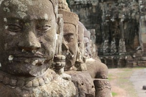
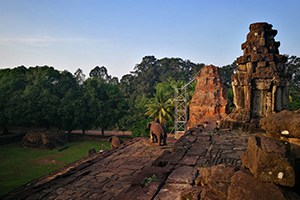
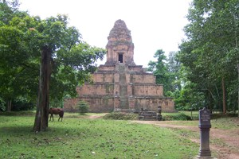
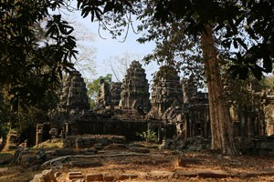
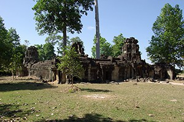
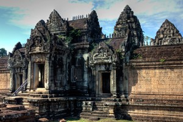
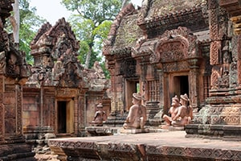
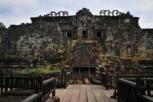
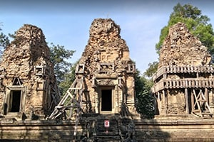
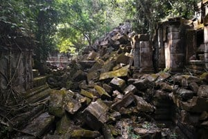

Angkor Wat
Angkor Wat temple is the reason why millions of tourists descend on Siem Reap each year. This UNESCO World Heritage site was built in the early 12th century and is still the world’s largest religious monument ever built.

Angkor Thom translates into English as the “Great City” and was the longest-lasting capital of the ancient Khmer Empire. The walled city was the centre of a huge building program by King Jayavarman VII.
Angkor Thom
Angkor Thom translates into English as the “Great City” and was the longest-lasting capital of the ancient Khmer Empire. The walled city was the centre of a huge building program by King Jayavarman VII.

Bakong Temple is one of the four temples which form part of the Roluos Group of Temples. The other temples in the group include Lolei, Preah Ko and Prasat Monti. This group of temples predate Angkor Wat by a few centuries.
Bakong Temple
Bakong Temple is one of the four temples which form part of the Roluos Group of Temples. The other temples in the group include Lolei, Preah Ko and Prasat Monti. This group of temples predate Angkor Wat by a few centuries.

Baksei Chamkrong is a small temple just outside Angkor Thom near the south gate. This 10th century temple was built in a pyramid style with a single tower.
Baksei Chamkrong Temple
Baksei Chamkrong is a small temple just outside Angkor Thom near the south gate. This 10th century temple was built in a pyramid style with a single tower.

Banteay Kdei is a 12th – 13th century temple built by King Jayavarman VII. In English, the name translates to “A Citadel of Chambers”. The temple is actually made up of a number of complex chambers and passages.
Banteay Kdei Temple
Banteay Kdei is a 12th – 13th century temple built by King Jayavarman VII. In English, the name translates to “A Citadel of Chambers”. The temple is actually made up of a number of complex chambers and passages.

Banteay Prei is a rarely visited temple located near to another small temple called Prasat Prei. The nearest major temple is Preah Khan.
Banteay Prei Temple
Banteay Prei is a rarely visited temple located near to another small temple called Prasat Prei. The nearest major temple is Preah Khan.

Banteay Samre is instantly recognisable as a smaller version of Angkor Wat. It is a Hindu temple built by King Yasovarman II in the early part of the 12th century. Not much is known about this fascinating temple, but it’s worth visiting and exploring.
Banteay Samre Temple
Banteay Samre is instantly recognisable as a smaller version of Angkor Wat. It is a Hindu temple built by King Yasovarman II in the early part of the 12th century. Not much is known about this fascinating temple, but it’s worth visiting and exploring.

Banteay Srei translates as the “Citadel of the Women” – it’s thought that the carvings are so fine that they could only have been carved by the hands of a woman. The pink sandstone and well-preserved carvings make for a fascinating visit.
Banteay Srei Temple
Banteay Srei translates as the “Citadel of the Women” – it’s thought that the carvings are so fine that they could only have been carved by the hands of a woman. The pink sandstone and well-preserved carvings make for a fascinating visit.

Baphuon is a multi-tiered temple mountain built by King Udayadityavarman II and was dedicated to the Hindu god, Shiva. It was later converted into a Buddhist temple and a 70m long reclining Buddha was added in the late 15th century.
Bapoun Temple
Baphuon is a multi-tiered temple mountain built by King Udayadityavarman II and was dedicated to the Hindu god, Shiva. It was later converted into a Buddhist temple and a 70m long reclining Buddha was added in the late 15th century.

Bat Chum temple was built in the 10th century. It’s located a few hundred metres away from Srah Srang. Unusually, it wasn’t constructed by a king, instead it was built by a Buddhist minister called Kavindrarimathana.
Bat Chum Temple
Bat Chum temple was built in the 10th century. It’s located a few hundred metres away from Srah Srang. Unusually, it wasn’t constructed by a king, instead it was built by a Buddhist minister called Kavindrarimathana.
Bayon Temple
Bayon is one of the most popular temples in the Angkor complex. It’s where you’ll see the famous faces of King Jayavarman II looking down at you from the towers of this magnificent temple and it’s definitely not a temple to be missed.

Beng Mealea is known as the “Jungle Temple”. It’s been mostly left unrestored and lays in ruins. This charming temple is surrounded by thick jungle and it’s not as busy as the other temples. You can explore and enjoy the open spaces.
Beng Mealea Temple
Beng Mealea is known as the “Jungle Temple”. It’s been mostly left unrestored and lays in ruins. This charming temple is surrounded by thick jungle and it’s not as busy as the other temples. You can explore and enjoy the open spaces.